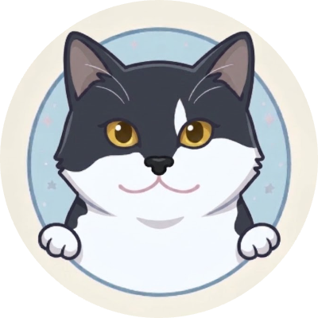
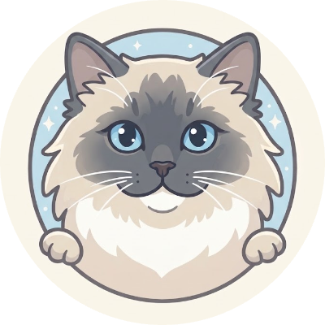

reading
{{ s.handle }}
{{ s.name }}
{{ s.legal }}
{{ s.bio }}
now: {{ s.now }}Projects
{{ projLabel }}{{ p.imgLabel }}
{{ p.owners }}
{{ p.status }} · {{ p.year }}
{{ p.title }}
{{ p.blurb }}
{{ p.note }}
{{ p.logCount }}
Journals
Dated notes from inside the projects. Open any entry to read it in full.
{{ journalLabel }}{{ m.label }}
{{ e.day }}

— {{ e.sign }}
{{ e.cta }}
{{ e.who }}{{ e.project }}{{ e.read }}
{{ e.title }}
{{ e.excerpt }}
{{ e.body }}
Nothing written about that yet.
The Cats

Tangyuan
汤圆Our tuxedo cat, named after the sweet rice balls traditionally filled with black sesame. His face inspired the logo, so yes, the little face you see up there is actually him.
{{ meowText }}

Niangao
年糕Our seal-point Ragdoll, named after the chewy Chinese rice cake. Another traditional treat, another very good cat.
{{ nMeowText }}
{{ gLabel }} · {{ photoCount }}
niangao says hi
{{ gameTitle }}